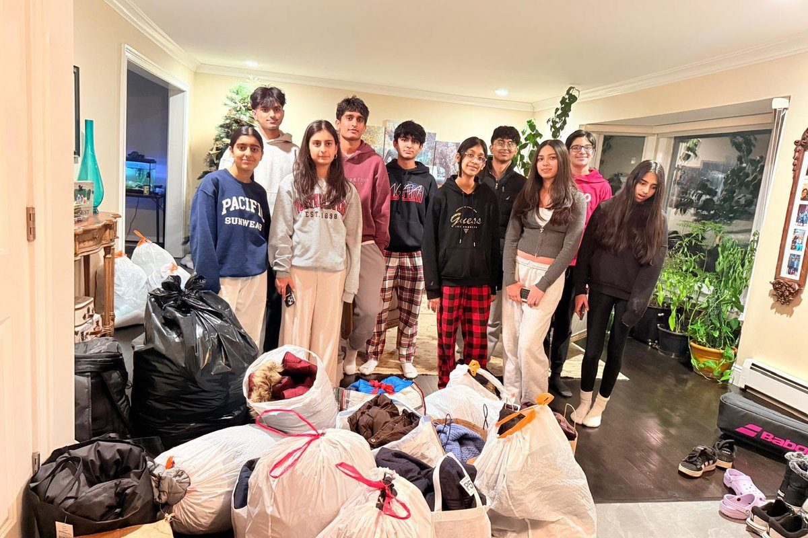

2026: Drive
Winter Coat Drive
Over two weeks in January and February we collected new and gently used coats, hats, gloves, and scarves from homes across Livingston, then delivered them to patients at Trinitas Hospital ahead of the coldest weeks of the year.
Trinitas Hospital